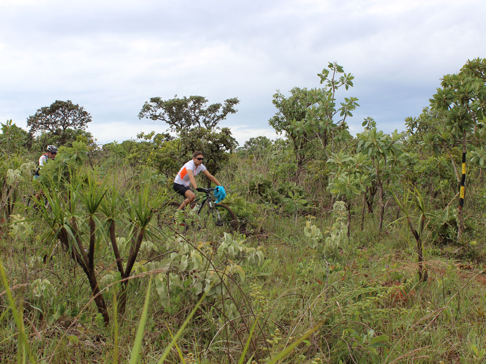

Trilha União

Extensão: 136 Km
GO
Recebeu esse nome por unir diversas unidades de conservação do DF como a Floresta Nacional de Brasília, Parque
Nacional de Brasília, Reserva Biológica da Contagem, Área de Proteção Ambiental do Planalto Central e do Rio
Descoberto.